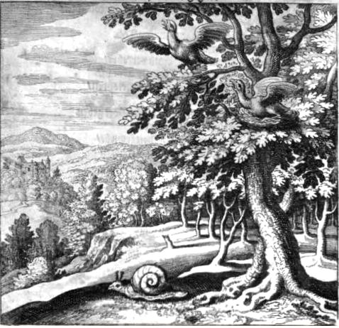
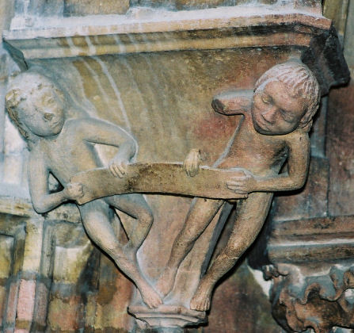
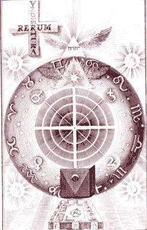

Emblema VII.
revu le 12 août 2004
Fit pullus à nido volans, qui iterùm cadit in nidum.
(L’oisillon s’envole de son nid et y retombe.)
L’oiseau de Jupiter1 en une roche creuse2
A fait son nid, s’y cache, y nourrit ses petits.
L’un d’eux veut s’envoler sur ses ailes légères,
Mais son frère, un oiseau sans plumes, le retient3.
Il revient donc au nid qu’il fuyait. A tous deux
Joins la tête et la queue : ce n’est pas œuvre vaine4.
FUGA VII
DISCOURS VII.Le chef de file des médecins, Hippocrate, affirme qu’il n’y a pas dans l’homme une humeur unique mais que les humeurs sont diverses et multiples, car s’il en était autrement des maladies variées ne pourraient pas naître5. Nous pouvons remarquer que cela s’applique véritablement aux éléments du monde. S’il n’existait qu’un seul élément, il ne se changerait jamais en un autre, il n’y aurait ni corruption ni génération, mais toutes choses seraient une seule réalité immuable, et la nature ne produirait à partir de là ni corps célestes, ni minéraux, ni plantes, ni animaux6. C’est pourquoi le Créateur suprême a disposé avec art tout ce Système du monde à partir de natures diverses et contraires, à savoir légères et pesantes, chaudes et froides, humides et sèches, pour que, suivant leurs affinités, l’une se convertisse en une autre, et qu’ainsi se réalise la composition de corps différant grandement entre eux sous le rapport de l’essence, des qualités, des vertus et des effets7. Les mixtes imparfaits possèdent en effet des éléments légers comme le feu et l’air et aussi des éléments lourds comme la terre et l’eau, qui s’équilibrent entre eux d’une manière parfaitement égale de telle sorte qu’ils ne se fuient pas mais qu’ils supportent aisément d’être pris et retenus l’un par l’autre, le voisin par son voisin.
La terre et l’air s’opposent mutuellement et il en va de même du feu et de l’eau. Cependant le feu nourrit de l’amitié pour l’air en raison de la chaleur qui leur est commune et pour la terre à cause de leur sécheresse. Ainsi tous sont reliés entre eux par des liens d’affinité ou plutôt de consanguinité, et ils demeurent ensemble dans une composition unique qui, si elle est riche en parties légères, élève avec elle les parties lourdes et, si elle contient en abondance des éléments lourds, abaisse avec elle les parties légères8.
Telle est la signification des deux Aigles, l’un emplumé, l’autre privé de plumes, dont le premier, qui a tenté de voler, est retenu par le second. Le combat du faucon et du héron fournit de ceci une illustration évidente9. Le premier nommé, après être monté plus haut que l’autre dans l’air grâce à son vol rapide et à ses ailes légères, capture dans ses serres et déchire le héron dont le poids les fait tomber tous deux à terre. Le contraire pouvait se voir dans la colombe artificielle ou automate d’Archytas, dans laquelle les parties pesantes étaient soulevées par les éléments légers, c’est-à-dire que son corps de bois était emporté vers le haut par l’air renfermé à l’intérieur.
Dans le sujet philosophique, les éléments légers l’emportent tout d’abord sur les parties lourdes, sous le rapport de la quantité, néanmoins ils sont vaincus par la puissance de ces dernières. Mais après un certain temps les ailes d’aigle se déchirent et les deux oiseaux donnent naissance à un oiseau unique et de grande taille (l’autruche)10, qui est capable d’avaler le fer et court à terre, embarrassée par son poids, plus qu’il ne vole dans l’air, bien qu’il possède des plumes magnifiques. C’est de cet oiseau ou d’un de ses pareils qu’Hermès écrit, comme l’atteste l’auteur de l’Aurore11 au chap. V :
" J’ai contemplé un oiseau vénéré des Sages, qui vole, tandis qu’il est dans le Bélier, le Cancer, la Balance et le Capricorne ; et tu en feras l’acquisition pour toujours à partir des vraies minières et des montagnes pierreuses. "12
Senior parle du même oiseau dans la Table, où il en voit deux, l’un volant, l’autre sans plumes ; chacun d’eux tient dans son bec la queue de l’autre, de telle sorte qu’on ne peut les séparer facilement. Telle est en effet la disposition de la nature Universelle : elle soulève toujours ce qui est lourd au moyen de ce qui est léger, et, inversement, abaisse les parties légères grâce aux parties lourdes, comme le déclare l’auteur du Parfait Magistère. Celui-ci a dénombré sept esprits minéraux à la ressemblance des astres errants et autant de corps métalliques ou étoiles fixes et il enseigne qu’il faut marier les premiers avec les seconds. C’est pourquoi l’Aristote chymique dit :
" Lorsque l’esprit aura dissous le corps et l’âme de manière qu’ils existent dans sa propre forme, il ne demeurera pas de corps fixe si tu ne l’as pas capturé lui-même. La capture consiste à l’unir avec le corps dont tu as effectué la préparation au début, car dans ce corps l’esprit est capturé et empêché de fuir vers ce qui est au-dessus. "13
Dans le camphre, comme le rappelle Bonus, les éléments légers, qui sont l’eau et le feu, l’emportent sur les éléments pesants. C’est pourquoi on dit qu’il s’évapore tout entier et se dissipe dans l’air14. Dans l’argent-vif, les fleurs de soufre et d’antimoine, le sel de sang de cerf, l’armoniac et les autres substances analogues, la terre vole avec l’air dans l’alambic et n’en est pas séparée. Dans l’or, le verre, le diamant, la pierre émeri, les grenades15 et les corps semblables, les éléments demeurent toujours unis et intacts, en présence de l’attaque du feu, et la terre retient et garde le reste en elle. Dans les autres combustibles, il se produit une division et une séparation des composants : les cendres demeurent au fond, l’eau, l’air et le feu gagnent les parties supérieures. Il ne faut pas, en conséquence, considérer la composition inégale des derniers corps mentionnés, qui ne provient pas d’un mélange suffisamment vigoureux, ni la mixtion des premiers, bien qu’elle soit plus durable, car ils sont néanmoins volatils, mais il faut avoir égard à la solidité, la constance et la fixité de la catégorie intermédiaire. Ainsi l’oiseau sans plumes retiendra l’oiseau emplumé, et la substance fixe fixera le corps volatil ; et c’est là ce qu’il faut obtenir16.
Notes1. L'oiseau de Jupiter peut être assimilé à l'aigle [humide radical métallique]. L'aigle sert aussi de médiateur avec le Soleil, car lui seul peut sans crainte fixer le Soleil. On ne saurait mieux définir le début de la coagulation de l'eau mercurielle car cette fixation de l'Aigle par le soleil, c'est l'accrétion du Soufre rouge et le début de la volatilisation du Mercure car autant qu'il fixe le soleil, l'aigle s'élève dans sa course et se rapproche peu à peu de cette ionosphère [terre de la rouille] dont nous parle E. Canseliet [Alchimie]. Cette fixation n'est point statique puisque l'aigle s'élève ; elle aquiert alors des qualités dynamiques qui peuvent la faire comparer au Phénix et de fait, les Psaumes font de l'aigle un symbole de régénération spirituelle, comme l'oiseau fabuleux que nous avons évoqué dans la section des blasons alchimiques et dans le poème du phénix. C'est exactement ce qui est indiqué par l'emblème qui ouvre le chapitre VII. Notez qu'il existe une image semblable dans le De Lapide Philosophorum de Lambsprinck

FIGURE I
(Lambsprinck, 7ème figure)avec la légende :
« Mercure plus souvent sublimé, est enfin fixé afin de ne pouvoir davantage s'enfuir ni s'envoler par la force du feu ; en effet la sublimation doit autant que nécessaire être réitérée, jusqu'à ce qu'il soit fait fixe. »
La figure du limaçon a été analysée dans l'Introïtus. On peut également faire remarquer que ce nid des aigles est situé au sommet d'une montagne, ce qui est le lieu hermétique par excellence de la conjonction du Ciel et de la Terre, c'est-à-dire de l'union du fixe et du volatil. Mais le volatil dont il s'agit n'est pas un « air » qui circule librement. C'est l'Air des Sages qui est évoqué là. Et le fixe n'est pas, non plus, celui auquel on pourrait croire, c'est-à-dire d'une terre constituée et, surtout visible. Non. Cette terre est le principe fixe de la Pierre, et constitue, littéralement, son Sel infusible. Tel n'est pas le cas de l'oxyde tingeant, de la teinture.
2. Il s'agit du « vieil arbre creux » que décrit Flamel dans ses Fig. Hiér. C'est un chêne atteint d'une maladie spéciale à ce type d'arbre, due au kermès. Un haut secret - dont nous avons révélé la teneur - est caché sous cette allégorie.
3. Cette allégorie voile la sublimation du Soufre rouge - l'oisillon qui s'efforce de voler - et qu'un oiseau sans aile - le Soufre blanc, infusible - retient. Philalèthe donne une allégorie semblable sous la fable [Introïtus, VI] d'Eros, considéré comme l'enfant de Vénus. En fait, Eros semble l'enfant d'Erèbe et de la Nuit. Par cabale, il s'agit donc de la première manifstation du Soufre renaissant, après la mise au tombeau. Le régime de Saturne est passé ; voici celui de Jupiter.
FIGURE II
(Dijon -Chambellan - les Soufres sous le joug - cliché Alain Mauranne)4. Oeuvre vaine : qui penserait que là-dessous se place un trait de cabale ? revoyez pour ce passage la gravure XLII de l'Atalanta fugiens de M. Maier ; les choses vaines et imaginaires renvoient à des substances à caractère volatile ; les vices renvoient à une matière corrompue, c'est-à-dire oxydée. Nous avons traité ce point de science dans la section sur la réincrudation. Lorsque Maier nous exhorte à joindre la tête et la queue, c'est à une circulation qu'il fait allusion, et nous ajouterons même, probablement, à une convection. C'est celle qui se produit dans le creuset, pendant la grande coction, c'est-à-dire la cuisson des matières qui doit s'étaler sur au moins 6 jours, coction qu'il ne faut surtout pas laisser s'éteindre brusquement. La circulation renvoie au serpent Ouroboros de la Tradition, nous n'y reviendrons plus.
5. les maladies atteignent les organes, non les humeurs, ou du moins ne les atteignent-elles que de façon indirecte. Mais à l'époque d'Hippocrate, on n'imaginait point la circulation du sang. Les maladies des humeurs - si l'on veut rester dans le fil de ce qu'écrit Maier, - ce sont les septicémies, c'est-à-dire les maladies infectieuses où une bactérie est mise en évidence sur des hémocultures. Mais ces septicémies ont un point de départ organique. On peut en dire autant, outre le sang, de la bile [ictères dont les étiologies sont très variées], des urines [infections, lithiases], de la lymphe [adénites, éléphantiasis, etc.], du liquide céphalo-rachidien, etc., etc. il faudrait encore parler de toutes les maladies sexuellement transmissibles [MST], mais nous n'avons pas pour ambition, ici, de rédiger un traité de pathologie humaine...
6. Maier parle évidemment de la théorie des Quatre Eléments de Platon, théorie qui a pour résultat direct, la transmutation d'un élément en un autre élément. Cette théorie - pour autant qu'on l'ait étudié dans l'optique du système et pour l'époque de Platon et d'Aristote, - était parfaitement logique. La scolastique médiévale a inventé la pierre philosophale, invention spirituelle géniale s'il en fut, en mêlant les principes issus de l'hermétisme de ceux issus du christianisme, en employant la croix [crux, creuset] en tant que fondement. [pour tous ces points, voyez l'Atlas des connaissances humaines, de Chevreul]. Remarquez que la corruption et la génération sont toujours très proches l'une de l'autre. La corruption, en alchimie, est l'état dans lequel se trouve le Soufre rouge, avant sa sublimation. L'opération, par laquelle il va se lier au Soufre blanc - encore appelé Sel par Paracelse ou Arsenic par Geber - se nomme la régime de Saturne. La génération se situe à un stade plus avancé de la Grande coction, vers le régime de Vénus ou de Mars. A ce stade, en tout cas, l'albification a déjà eu lieu.
7. Ce passage aurait pu être emprunté à Platon, qui ne dit guère autre chose dans le Timée. Notez qu'avant Marsile Ficin, Platon n'était pratiquement connu que par ce Dialogue. Le chaud, le froid, l'humide et le sec sont des qualités qui ont été attribuées aux Eléments par Athénée. Voyez la planche I de l'Atlas de Chevreul. Ces qualités, ces substantifs propres, sont d'ailleurs redondants. Car le froid n'est jamais que l'absence de chaleur, et le sec, la privation d'eau. La proposition peut être renversée. Il semble que l'on puisse opposer - ou réunir - les deux groupes d'éléments suivants : Eau et Terre d'un côté ; Feu et Air de l'autre. Ces associations sont des synthèses mentales qui, on le voit, possèdent une certaine logique. Quant aux termes que cite Maier, voici ce qu'en dit Pernety :- Essence. Matiere des Philosophes parvenue à la couleur blanche. Les Adeptes lui ont aussi donné le nom d’Essence blanche. Voyez QUINTESSENCE.
Il n'est pas certain que l'auteur de l'Atalante et Pernety aient vu le mot essence avec les mêmes lunettes. Rappelons que l'essence est la nature propre et nécessaire qui fait qu'une chose est ce qu'elle est. En alchimie, les Adeptes disent que leur Pierre est d'essence ignée, par exemple, et qu'elle est cuite par un sel de vertu céleste [c'est ce qu'a rapporté Helvetius dans une relation où un Adepte lui donna un grain de poudre]. Le mot Qualités ne figure pas au nombre des articles du Dictionnaire de Pernéty. Nous retiendrons donc celles que Platon a définies.
- Vertu du Ciel. Feu implanté et inséparable de la matière de l'œuvre, qui mis en action par un autre feu, produit le soufre des Philosophes, appelé Minière de feu céleste.
Le terme vertu renvoie aux Vertus antiques [cf. section des Gardes du corps de François II]. La vertu, telle que l'a conçoit Pernety est en rapport direct avec l'opération que veut décrire Maier dans ce chapitre VII. D'un côté, le feu implanté, mis en action par le feu vulgaire, voile le Mercure animé ou compost, qui contient en puissance le Soufre rouge. Comme ce Soufre a souvent été comparé à un rayon divin, à un rayon de soleil que l'on doit capturer, on ne s'étonnera pas que le Mercure animé - Vertu du Ciel - soit décrit comme la minière de feu céleste. Quant à la matière de l'oeuvre, il s'agit de la substance terreuse [Sel, Corps, Arsenic, Soufre blanc en sont les épithètes habituels]. Enfin, les effets de la Pierre sont d'ordre organoleptique. Voyez le Résumé de Chevreul a cet égard.
8. Comme nous venons de le voir à la note 7, il est logique, selon Platon, que la Terre et l'Air soient opposés : la dureté d'un côté, le fluide essentiel de l'autre. De même, le Feu et l'Eau qui se combattent. Mais observons les contrastes. Dans le 1er cas, l'affrontement est pacifique ; dans l'autre, il est agressif et se pare d'effervescences qu'on nomme le bouillonnement ou de l'apparition d'un fluide brûlant que l'on nomme vapeur.
FIGURE III
((extrait de Jacob Bôhme, Theosophische Wercken, 1682 : les Quatre Eléments)Cette planche de Bôhme donne à voir les quatre eléments idéalisés, à comprendre de la façon suivante : Mars renvoie au FEU ; Saturne à la TERRE ; Vénus, à l'EAU et Jupiter, à l'AIR. Si nous considérons notre système réformé du quaternaire des signes zodiacaux, il est évident que la figure de Bôhme n'est compatible que si l'on tient compte que certaines planètes ont des maîtrises multiples. Seuls Mars et Saturne ne posent pas de problème. Vénus doit être associé à la Balance [cf. Atalanta,XLI] et Jupiter aux Poissons [cf. Atalanta, XL].
observation : les substantifs propres qui s'opposent : d'un côté, le froid [Air] et le sec [Terre]. De l'autre, le chaud [Feu] et l'humide [Eau]. Ces observations peuvent paraître triviales. Elles possèdent pour l'hermétiste des caractères qui lui permettent d'élire des substances spécifiques. Nous appliquerons cette réflexion à trois exemples :
1)- la chaux : n'est-ce pas avec de l'Eau que l'on « éteint » la chaux, qui se présente pourtant comme une Terre ? Et la chaux, en s'éteignant, ne produit-elle pas le bruit du fer lorsqu'on l'applique dans l'Eau ? Comprend-on à présent pourquoi nous avons fait de la chaux le glaive de la Justice, dans l'examen du Verbum dimissum du Bon Trévisan ?
2)- le pyrophore de Homberg : cette substance, qui se présente comme une poudre et qui est une Terre, paraît inerte dans l'Air sec. Que l'on souffle dessus : le pyrophore s'enflamme aussitôt. Que s'est-il passé ? Le souffle de l'homme contient de la vapeur d'Eau. L'Air humide détermine la combustion instantanée du sulfure de potassium et la température est telle que le pyrophore s'embrase.
3)- voir note 14 sur le camphre ;
conclusion : dans le premier cas, on éteint de la Terre avec de l'Eau ; dans le second cas, on met le feu à la Terre avec de l'Air mêlé de vapeur, c'est-à-dire d'Eau. N'est-ce pas là chose admirable ? Qui au Moyen Âge, aurait été pris, de manière irréfragable, comme un fait de magie, qui eut voué l'opérateur au bucher ? Oui, certainement. Par ignorance. Combien de procès en sorcellerie ont été ainsi menés contre des gens qui n'avaient eu que des intuitions avant leur temps ?
Maier fait justement remarquer que l'on peut trouver une transition, un juste milieu en somme aux Eléments : au lieu de considérer les substantifs propres, ce sont les agents de liaison qu'il considère : la chaleur est commune à l'Air et au Feu ; de même la sécheresse - qui n'est pas le Sec d'Athénée - tient de vecteur entre le Feu et la Terre. Où donc est la différence ? En ceci d'essentiel, c'est que la chaleur et la sécheresse désignent des actions au lieu que les termes chaud et sec désignent des états. La différence est d'importance et nous avons déjà signalé combien de textes alchimiques devaient être relus, en ayant à l'esprit qu'ils désignaient, d'une manière inconsciente, des actions, des réactions et non des états. En cela, comme en d'autres points, les alchimistes se sont posés comme des Modernes. Aucun critique, aucun historien de l'Art n'a relevé ce fait, pourtant facile à débusquer.9. Faucon et héron font partie du Bestiaire hermétique. Sur le faucon et son symbolisme, lié essentiellement à Horus, voyez la sous-section I de la critique de Chevreul sur Hoefer. Nous ajouterons qu'Horus est assimlé par les cabalistes à l'hypoténuse d'un triangle rectangle. Ce qui nous renvoie directement aux Quatre Eléments [cf. Atlas, planche I, Chevreul]. En Égypte, le faucon représente l'âme. Il évoque aussi l'élévation spirituelle. Tout concourt donc à faire du faucon l'équivalent du Soufre rouge en puisance. Horus enfant est assimilé à Harpocrate [1, 2, 3, 4,]. Il prend la forme, dans l'ancienne Egypte, du dieu du ciel et de la royauté qui assimila un ensemble de divinités à forme de faucon. Ce nom fut attribué au moins à trois dieux. Primitivement au dieu du Ciel dont un oeil était le soleil et l'autre la lune. [nous retrouvons ici les deux divinités primordiales qui jouent un rôle fondamental dans le Grand oeuvre] Ensuite à un dieu dynastique qui donna son nom aux souverains égyptiens et symbolisé par un faucon. Enfin, on l'ajouta à l'Ennéade héliopolitaine comme fils d'Isis et d'Osiris. Il vengea son père par sa victoire sur Seth. On le représente souvent sous la forme d'un faucon ou d'un homme avec une tête de faucon, souvent dieu du ciel à double couronne, et également sous la forme d'un enfant nu assis sur un trône. Enfin, on n'aura garde d'oublier Hathor [maison d'Horus] : Hathor fut d’abord représentée comme une vache céleste soulevant le soleil entre ses cornes, en regard de son rôle de mère du soleil [elle joue le rôle d'Artémis aux cornes lunaires]. Puis, au fil des siècles, elle prit les traits d’une femme dont la tête était surmontée de deux cornes de vache enserrant l’astre divin. Elle devint rapidement une déesse universelle se confondant avec une autre déesse essentielle, Isis. Pour les différencier l’une de l’autre dans les représentations sur les parois des temples ou des tombes il suffit de déchiffrer le nom inscrit au-dessus de leur tête : le hiéroglyphe d’Hathor, un faucon placé dans l’enceinte d’une maison permet d’identifier Hathor, tandis que le hiéroglyphe d’un trône signale la présence d’Isis. Cette identification est d'une certaine importance pour l'hermétiste : dans un cas, le faucon indique la maison d'Horus - c'est-à-dire l'athanor, le vase de nature où cuit le Soufre -. Dans l'autre cas, Isis est le prototype du Mercure tel qu'il a été envisagé par les plus anciens alchimistes. C'est en Isis que l'on trouve tout ce qui est utile pour apprécier les qualités de l'eau mercurielle.
Examinons à présent le symbolisme du héron. Il rejoint celui des échassiers. Dans les traditions européennes et africaines, le héron symbolise la vigilance, qui peut aisément se pervertir en curiosité abusive. Dans l’occultisme ancien, sans doute pour son bec fin et pénétrant, il passait pour un symbole de science divine. La vigilance est liée, en fait, à quatre animaux qu'on retrouve souvent dans le bestiaire : Coq, héron, griffon, lion. Nous laissons au lecteur le soin d'examiner en recherche tous les points de cabale qui se rattachent à ces animaux. Nous noterons au passage que le griffon est la marque du résultat du duel des deux natures minérale et métallique ; que le lion a un sens différent, selon qu'il est vert ou rouge ; que le coq, enfin, est l'oiseau consacré à Minerve et qu'il exprime, lorsqu'il est lié au renard, une allégorie dont parle Fulcanelli dans Myst. référez-vous à ce que nous disons de la noix de galle, du coq et de son rapport avec la rouille [ioV ou roia, par cabale, c'est-à-dire grenade] dans la section des blasons alchimiques.
10. c'est dans Huginus à Barma que nous trouvons l'exacte signification du mot autruche :" Paracelse a donné à ce corps ainsi purifié le nom d'Autruche naissante dans la terre, & à son esprit, celui d'Estomac de l'autruche qui naît dans la terre. Pour avoir cet esprit, ramenez l'Autruche dans son chaos, dans ce chaos où elle était primitivement enfermée, & dans lequel les éléments tenaient caché & emprisonné comme dans un antre secret, ou dans une caverne, cet admirable esprit de vie, qui est un vrai Protée & le véritable Panurge ou Agent universel. Cet esprit est la Lunaire de Raymond Lulle, le Sang de dragon d'Albert le Grand, la Saturnie de Basile Valentin, l'Esprit de vin d'Arnaud de Villeneuve. Mais son propre nom est le Mercure des Philosophes, le Vinaigre très aigre, le Lait de la vierge, l'Eau pontique, l'Eau sèche qui ne mouille pas les mains. " [chap. XVI]
Cette eau pontique est le Mercure philosophique.
11. Maier veut probablement évoquer l'Aurora de Jacob Boehme [Die Morgenroete im Aufgang] achevée en 1612, précédant donc la parution de l'Atalanta fugiens. Le texte en fut traduit en français : l'Aurore, par le Philosophe inconnu (Louis Claude de St Martin) Paris, 1800. On peut trouver le texte de l'Aurora, en allemand, sur le site suivant : http://home.t-online.de/home/lapsitexillis/aurora.htm
12. Il faut prendre garde qu'ici, l'auteur de l'Aurore fait allusion au zodiaque hermétique - alchimique - et non au zodiaque des astrologues [cf. zodiaque alchimique]. Dans la section prima materia, nous avons été amenés à revoir les attributions traditionnelles entre les groupements quaternaires. Les signes du Bélier, du Cancer, de la Balance et du Capricorne définissent les Quatre Eléments utilisables par les alchimistes. Le Bélier renvoie à la fois à Arès et Ariès qui n'ont pas la même signification. C'est un signe de Feu. Le Cancer, que nous avons défini comme un signe d'Air - la tradition en fait un signe d'Eau - est le signe lunaire, c'est-à-dire de l'empreinte mercurielle. La Balance est, de même un signe d'Eau - la tradition en fait un signe d'air - et le Capricorne est un signe de Terre. Outre ces correspondances par qualités, les signes du zodiaque sont associés aux planètes : Mars pour le Bélier ; la Lune pour le Cancer ; Vénus pour la Balance et Saturne pour le Capricorne. Mars et Vénus sont ainsi opposés si l'on considère leur signe respectif. Il en est bien ainsi lorsque l'on veut préparer le Mercure : la minière de Mars est de nature vitriolique ; celle de Vénus serait plutôt d'une terre calcaire apparentée à la pierre de Jésus ; les deux autres extrêmes ont plus directement à voir avec le Mercure. Saturne-Cronos est le 1er régime de la Grande coction et la Lune, quand elle brille en son plein, indique le degré de chaleur qu'il faut imposer au vase de nature, si l'on veut cuire canoniquement les natures minérale et métallique.
13. C'est nous qui soulignons. Cette phrase est à peu près incompréhensible si l'on n'a pas étudié les expériences de synthèse minéralogique. Ce que le pseudo-Aristote veut dire, c'est que, au début de la Grande Coction, l'Esprit [le Mercure] dissout le Corps [Soufre blanc] et l'Âme [Soufre rouge ou teinture]. La relation aux étoiles fixes est sibylline. Platon, dans le Timée, écrit :« S'agissant donc de l'espèce divine, c'est de feu qu'il réalisa la plus grande partie de sa structure, afin qu'elle fût le plus possible brillante et belle à voir ; et, pour qu'elle soit conforme à l'image du tout, il lui donna une forme bien arrondie. Puis cette espèce, il l'installa dans la régularité du mouvement le plus puissant, pour qu'elle soit entraînée par lui, après l'avoir répartie en cercle dans tout le ciel, diversifiée en une broderie...»
C'est évidemment de l'âme du Monde qu'il entend parler. Les astres fixes sont entraînés par la sphère du Même, tandis que les astres errants [les planètes] sont entraînés par la sphère de l'Autre. Le mouvement propre à la terre est dû à l'âme qui lui fut impartie, asurrant la rotation axiale, au centre, par rapport à la sphère des fixes, et agissant en sens inverse du mouvement communiqué par le Même [cf. Timée, trad. Luc Brisson, 39d-40b, GF, 2001]. Les esprits minéraux, représentés semble-t-il par les planètes, sont les chaux des métaux. Mais on ne comprend plus ce qu'il veut signifier lorsqu'il établit un rapport entre les corps métalliques et les étoiles fixes, sinon symboliquement en voulant désigner le métal comme une étoile.
14. le camphre [1, 2, 3,] est le type même de Terre qui se résoud en Air au contact de l'Eau. La structure du camphre était considérée au XIXe siècle comme étant un octaèdre. Or, ce polygone représente, selon Athénée, la forme de l'Air. Voici un extrait sur la camphre :Le camphre est blanc, solide, cassant, d'une saveur brûlante, d'une odeur caractéristique; il cristallise en octaèdres; on peut le pulvériser facilement lorsqu'on l'humecte avec de l'alcool. Sa densité est 0,996. Il fond à 175° et bout à 204°. Sa densité de vapeur est 3,317; la formule C20H16O2 représente 4 volumes de vapeur. Le camphre se vaporise assez rapidement à la température ordinaire; quand on jette sur l'eau des fragments de camphre, ceux-ci s'agitent vivement, et présentent un mouvement giratoire. Lorsqu'on place verticalement dans de l'eau un cylindre de camphre, assez élevé pour qu'une partie se trouve en dehors du liquide, le camphre imprime par son évaporation un mouvement de va-et-vient à l'eau, et le cylindre se trouve bientôt coupé à la surface du liquide.Comme on le voit, le camphre se présente comme une Terre spéciale qui s'agite, c'est-à-dire qui prend une qualité ignée, et qui se transforme en Air au contact de l'Eau.
Le camphre dévie à droite la lumière polarisée; il est combustible et brûle à la manière des huiles essentielles; il est a peine soluble dans l'eau : 1000 parties d'eau ne dissolvent que 1 partie de camphre. L'eau peut dissoudre une plus grande quantité de camphre sous l'influence d'une pression considérable.
Le camphre est très-soluble dans l'éther et dans l'alcool; on le précipite en poudre, lorsqu'on traite ces dissolutions par l'eau.
Le camphre, distillé avec quatre ou cinq fois son poids d'argile, se transforme en un corps huileux. Lorsqu'on fait passer de la vapeur de camphre sur de la chaux portée au rouge, il se forme de la naphtaline et, une substance liquide que l'on a nommée camphrone. (M. FREMY.)
15. C'est-à-dire les pierres précieuses. Remarquez l'allusion à la pierre émeri : Maier indique qu'il s'agit des seules matières qui gardent en elles leurs propres éléments.
16. Autrement dit, il faut obtenir un moyen terme, soit une substance qui tienne le milieu entre Eau, Terre, Feu et Air. Cette substance existe dans deux circonstances. Dans la nature, c'est elle qui a agi et qui est responsable des magnifiques concrétions minérales qui sont notre sujet ; cette substance a agi par la voie humide, sous des conditions de pression et de température que les alchimistes ne pouvaient pas créer dans leurs cornues ou dans leurs matras...Mais ils pouvaient la créer de toutes pièces par la voie sèche et à une température de l'ordre de 1300°C. Cette substance est le Mercure philosophique qui permet tout à la fois de résoudre les métaux en leur première matière, puis d'assembler la partie minérale et la partie métallique, dûment choisies par l'Artiste, en sorte que la Pierre puisse murir et arriver à maturité. C'est ce qu'a réalisé J.J. Ebelmen.